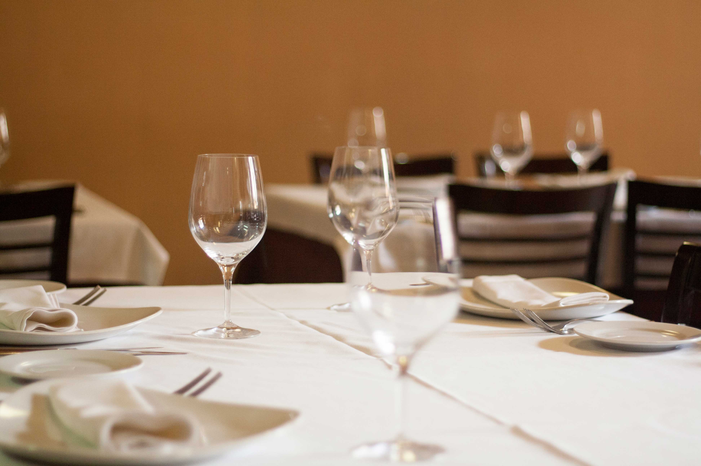
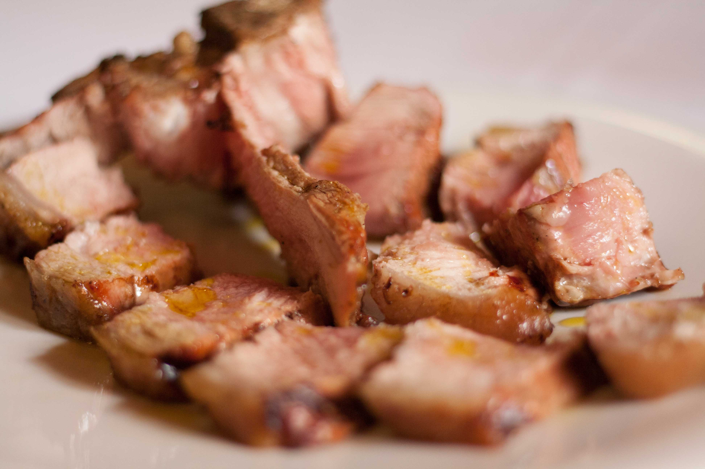
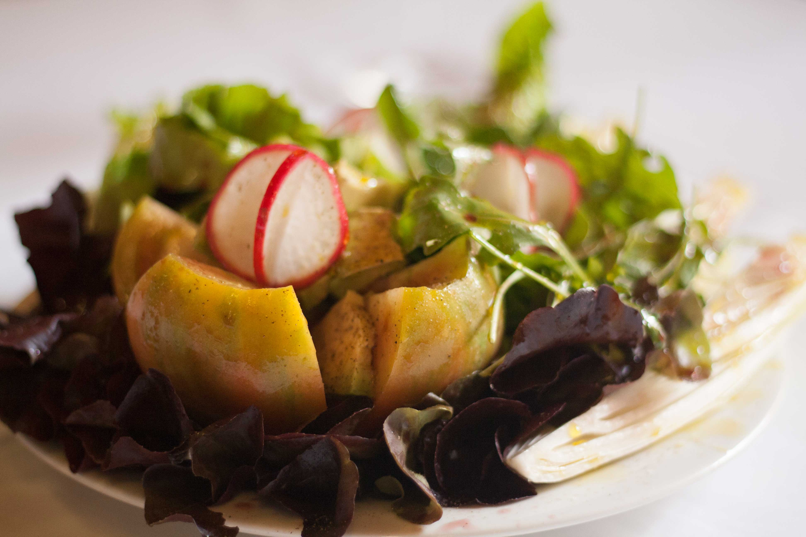

BIENVENIDOS
- El nombre Araguaney proviene de una árbol venezolano, del
- cual, los proverbios Indios dicen que allá donde hay un
- Araguaney, es un buen sitio para estar. Somos un Restaurante
- muy especializado, contamos con tres tipos de carne, siempre
- de vacuno: Mamet, que es un ternero lechal, la Rubia, que es
- la raza autóctona de Galicia y que se ha alimentado de leche
- y hierba, y la vaca vieja, que tienen como mínimo 8 años de
- edad. Para acompañar la carne contamos con una gran
- bodega, siempre con mínimo de dos referencias de las
- regiones vitivinícolas de España, y así poder ofrecer los
- mejores caldos.

NÚMERO DE RESERVA: 963 902 578